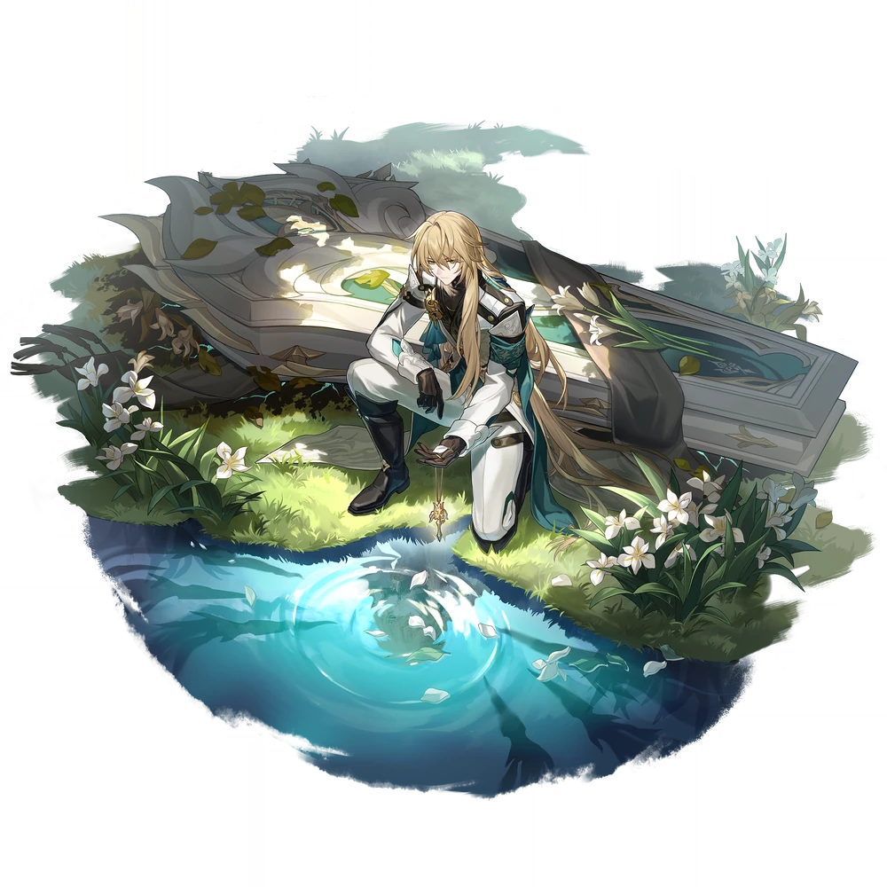
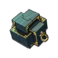
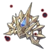

| Nome | Luocha |
|---|---|
| Elemento | Imaginario | Raridade | ✦ ✦ ✦ ✦ ✦ |
| Caminho | A Abundancia |
| Sexo | Masculino |
| Especie | Humano |
| Facção | O Xianzhou Luofu (no perfil)- O Xianzhou Yuque- Guilda Comercial Intergaláctica | Mundo | O Xianzhou Luofu | Como obter | Perseguição Laica | Data de Lançamento | 2023-06-28 | Adicionado pela primeira vez | Versão 0.90
Luocha foi readicionado como personagem exclusivo da história.
Atualizações na obtenção de personagens: Antigo:obtido em caixas de desejos de personagens. Novo:não pode mais ser obtido nas Wishboxes de personagens. |
Ascensões e estatísticas
| Fase de Ascensão | Level | Base HP | Base ATK | Base DEF | Base SPD |
|---|---|---|---|---|---|
| 0✦ | 1/20 | ||||
| 20/20 | |||||
| 1✦ | 20/30 | ||||
| 30/30 | |||||
| 2✦ | 30/40 | ||||
| 40/40 | |||||
| 3✦ | 40/50 | ||||
| 50/50 | |||||
| 4✦ | 50/60 | ||||
| 60/60 | |||||
| 5✦ | 60/70 | ||||
| 70/70 | |||||
| 6✦ | 70/80 | ||||
| 80/80 |
| Nível | Custo de Evolução | Materiais de Ascensão do Personagem | Materiais Necessários |
|---|---|---|---|
| 0 → 1 ✦ |  4,000 4,000 |
5 | |
| 1 → 2 ✦ | 8,000 |
10 | |
| 2 → 3 ✦ | 16,000 |
3 | 6 |
| 3 → 4 ✦ | 40,000 |
7 | 9 |
| 4 → 5 ✦ | 80,000 |
20 | 6 |
| 5 → 6 ✦ | 160,000 |
35 | 9 |
Habilidades de combate
| Icone | Tipo | Nome | Descrição | Marcação | Energia | Resistência DMG |
|---|---|---|---|---|---|---|
| ATK básico | Espinhos do Abismo | Causa DMG imaginário igual a 50% –110% do ATK de Luocha a um único inimigo. | Alvo único | Geração: 20 | 30 | |
| Skill | Oração da Flor do Abismo | Depois de usar sua habilidade, Luocha restaura imediatamente o HP do aliado alvo igual a 40%–64% do ATK de Luocha mais 200–890 . Enquanto isso, Luocha ganha 1 pilha de Flor do Abismo. Quando a porcentagem de HP de qualquer aliado cair para 50% ou menos, um efeito equivalente à Habilidade de Luocha será imediatamente acionado e aplicado a este aliado por uma vez (sem consumir Pontos de Habilidade). Este efeito pode ser ativado novamente após 2 turno(s). | Restaurar | Geração: 30 | ||
| Ultimate | Desejo de Morte | Remove 1 buff(s) de todos os inimigos e causa DMG imaginário igual a 120% –240% do ATK de Luocha a todos os inimigos. Luocha ganha 1 pilha de Flor do Abismo. | AoE | Custo: 100 Geração: 5 | 60 | |
| Talento | Ciclo da vida | Quando Abyss Flower atinge 2 pilhas, Luocha consome todas as pilhas de Abyss Flower para implantar um Campo contra o inimigo. Quando qualquer inimigo no Campo é atacado por um aliado, o HP do aliado atacante é imediatamente restaurado em uma quantidade igual a 12%–19,2% do ATK de Luocha mais 60–267 . O efeito do Campo dura 2 turnos. Quando Luocha for derrubado, o Campo será dissipado. | Restaurar | |||
| Técnica | Misericórdia de um tolo | Depois que a Técnica for usada, o Talento será acionado imediatamente no início da próxima batalha. | Restaurar |
Eidolons
| Icone | Nome da habilidade | Nivel | Descrição |
|---|---|---|---|
| Ablução do Rápido | 1 | Enquanto o Campo estiver ativo, o ATK de todos os aliados aumenta em 20%. | |
 |
Doação do Puro | 2 | Quando sua habilidade é ativada, se o HP do aliado alvo for inferior a 50%, a Cura Extrovertida de Luocha aumenta em 30%. Se o HP do aliado alvo estiver em 50% ou mais, o aliado recebe um Escudo que pode absorver DMG igual a 10% do ATK de Luocha mais 240, com duração de 2 turnos. |
| Pesquisa feita pelo tolo | 3 | Habilidade Nv. +2, até um máximo de Nv. 15. ATK Básico Nv. +1, até um máximo de Nv. 10. | |
| Pesada está a coroa | 4 | Quando o Campo de Luocha está ativo, os inimigos ficam enfraquecidos e causam 12% menos DANO. | |
| Cicatriz 'Sob a Dor | 5 | Nível final. +2, até um máximo de Nv. 15. Talento Nv. +2, até um máximo de Nv. 15. | |
| Reunião com a poeira | 6 | Quando Ultimate é usado, há uma chance fixa de 100% de reduzir a RES All-Type de todos os inimigos em 20% por 2 turno(s). |
Traços
| Custo Total (1 → 6 para rastreamento de ATK básico) | ||||||
|---|---|---|---|---|---|---|
| 240.000 |
6 | 7 | 7 |  3 3 |
 8 8 |
 11 11 |
| Custo total (1 → 10 para um rastreamento) | ||||||||
|---|---|---|---|---|---|---|---|---|
| 652.000 |
9 | 13 | 7 | 3 |
15 |
30 |
.webp) 3 3 |
 1 1 |